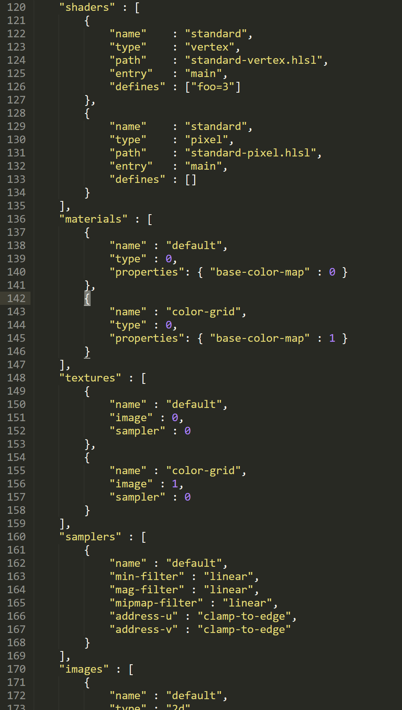
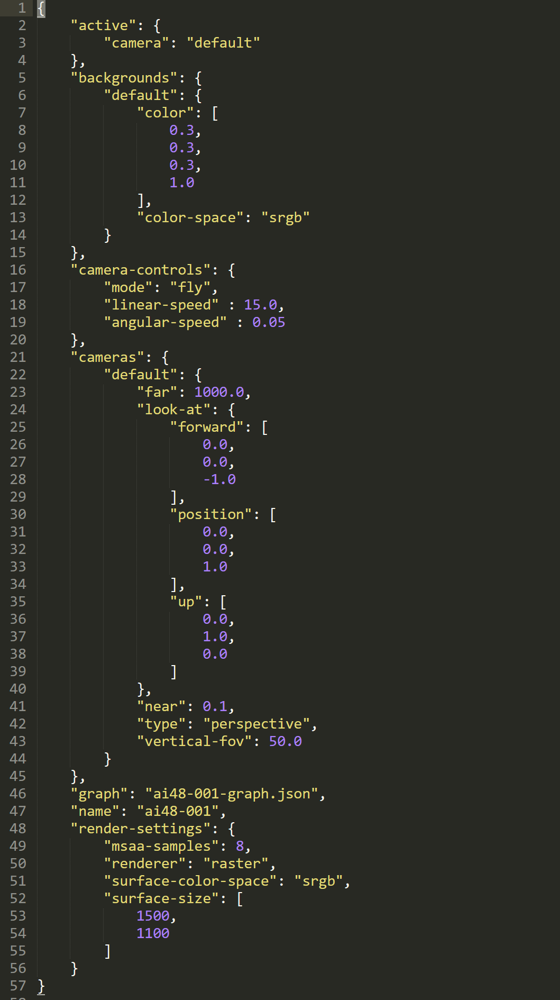
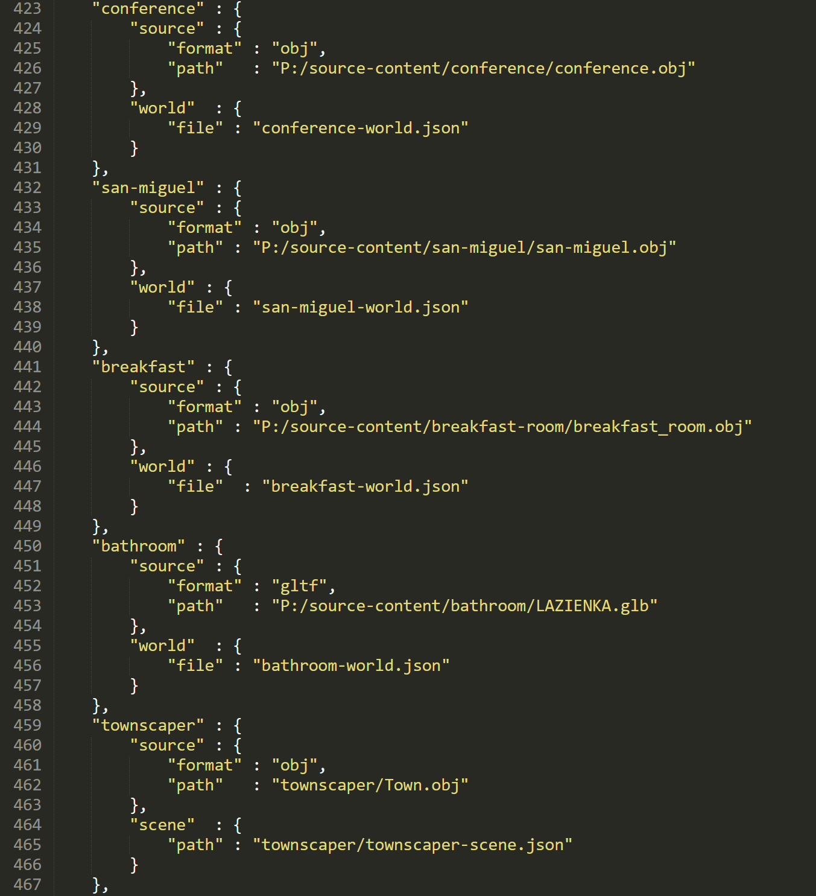

**BCView: A Modern Graphics Engine and Viewing System**
Check out the code on bitbucket.org!

I think most graphics programmers would agree that one of the best ways to stay current in computer graphics is to have your own sandbox engine. I started this one in the fall of 2018, shortly after hearing about NVIDIA's just announced hardware raytracing cards at SIGGRAPH that year.
**From OpenGL to Vulkan**
Knowing very little about Vulkan at the time, I bought a 2080 card, and then spent many enjoyable evenings studying vulkan-tutorial.com. After the "triangle on the screen" ritual, I just kept abusing the code until I got the Vulkan NVIDIA ray tracing extension going.
At some point, I cleaned everything up when the ray tracing extensions became Khronos official, and 2 years and many rewrites later, I finally have something I'm happy with as a general framework for prototyping. I learned a ton about Vulkan along the way, and while it is of course incredibly verbose, I do prefer it over OpenGL.
The rest of this post will describe the engine (and the journey) in more detail.
**Scene Description**
Early on I hit the "asset wall", that point at which you realize you really need some sort of formalized scene format, and a dedicated build system to consume it. So I designed a scene format, based loosely on a glTF-like style, so that it was mostly 1-1 with that.
In this setup, there are 2 files needed. The first file is called the "graph", and it stores the scene graph in my bcview format. The second file is called the "world", and it represents the top-level description that glues everything together.
The graph file can be either hand-authored, or generated from my import tool. The import tool consumes OBJ, DRC, glTF, etc. and outputs the graph file. My format is loosely based around the way glTF was designed, so it can easily represent most real-time oriented scene descriptions.

Sample graph file

Sample world file
The world file is always hand-authored. This file points to the graph file, and in the future can point to other resource files as well. So why the 2-file approach?
It's basically to allow me to iterate efficiently using a DCC tool like Unreal Editor. I compose a scene in Unreal, lay everything out, dial in the lighting, etc, and then export to glTF. My import tool converts from glTF to my graph format.
So during iteration, the graph file keeps getting overwritten, but the world file remains intact. This lets me get the best of both worlds - I get to keep my own format, for flexibility, but I have a clear path from well-known scene formats to mine. It's easy to imagine other tools I may want to write in the future that compose directly into my format (no need to involve 3rd party scene descriptions at all, thus saving an import step), and this approach makes that viable as well.
Finally, it's nice to have all the worlds I've ever built all stored in one little database, which I store in a json file below.

Sample world db file
This allows me to rebuild any world at any time from the command prompt by doing e.g.:
```
C:\Users>bcbuild conference winvk
C:\Users>py P:/bcbuild/scripts/bcbuild.py conference winvk
DXC version: dxcompiler.dll: 1.7 - 1.7.0.3618 (b3101a2fe); dxil.dll: 1.5(10.0.19041.685)
Running P:/bcbuild/vs/x64/Debug/bcbuild.exe conference winvk...
Done. (2.77 seconds)
```
In the build system, I generate hashes for everything, rather than using timestamps, but I do need to use DXC to at least generate a pre-processed shader file from which I generate the hash, so that's why you see DXC above. But in this case, everything is already up-to-date, so nothing is built.
**Memory Allocation**
I wanted to use C++ containers that support custom allocators, and the C++ standard library makes this rather difficult. Instead, I opted to use the excellent EASTL library from Electronic Arts. It provides a (mostly) C++ standard library interface for containers, but allows you to plug your own allocators in pretty easily.
I currently have stack, linear, and buddy allocators that I've written that are straightforward to use with EASTL. The entire run-time is wrapped in a session object, so I can tear-down and rebuild the entire scene within a single run of the executable, and, looking at my memory allocation UI, I can see if even a byte of memory is being leaked, which has come in handy.
As an aside, coding up the buddy allocator was my first experience porting an algorithm from the MIX language in Knuth's The Art of Computer Programming and it was really fun.
You can see the memory allocation window in the screenshot below.
**DirectX 12 Support**
Eventually I decided things were getting too Vulkan-centric, and I also realized how little I knew about DirectX 12, so I figured I'd add that to the engine. This would also allow me to be able to use some new profiling and debugging tools, like Microsoft PIX, in addition to tools I was already using (RenderDoc, NSight, etc.)
I followed the same general approach as I did for Vulkan, just to get something on the screen. Then I did a complete rewrite to form a more coherent RHI layer. Somewhere along the way I wanted everything to be bindless, and while that ended up being a massive effort, I truly can't imagine going back to the old slot-based approach now.
I'm very thankful that there is a clear path from HLSL to SPIR-V, as this allows me to only author shaders in HLSL once, and they can be used in both the DirectX and Vulkan ports of my engine.
**Ray Tracing**

The road from the first hardware ray-traced shapes to what I have now was a long and arduous one. I wanted to have the notion of a BxDF in the scene description match as much as possible between raster mode and ray tracing mode. I think it's also super useful to be able to switch between ray tracing and raster at run-time, so all of this meant description parameters and structure had to, as much as possible, have a reasonable (and consistent) interpretation in both modes.
Additionally, I like the benefits of being able to run the code on many different types of GPUs, for debugging, perf tests, etc, but of course this means that the code cannot assume ray tracing hardware exists. This all seems pretty obvious, and maybe even straightforward to some, but it was quite painful to get to the point where everything ran just fine on Intel, AMD, and NVIDIA, with all the permutations, graceful error messages, etc.
**AR/VR**
One thing that kept nagging at me with the shaders is that for a long time, they had no notion of a view index, which meant I wouldn't be able to see things render in stereo in e.g. a headset. To fix this, I started with bringing in support for VK_KHR_multiview, so I could basically "broadcast" renders to multiple views, each of which renders to a "slice" of an array image over on the GPU.
With a working stereo render capability, the next step was to integrate OpenXR, so that I could present those array image slices into each eye of a VR headset. I have basic support for this now, but it still needs input support from the hand controllers. Currently you can only navigate with WASD and mouse, even with the headset on. In practice, this isn't too much of a limitation for me, but still it would be nice to have full controller support.
**Next Steps**
One obvious problem with having multi-platform support is that whenever you add a feature for one, you of course need to do it for the other if you want to maintain parity. As of right now, I only have support for hardware ray tracing on the Vulkan side, so I'd like to get things going for DirectX 12 next. It has *generally* been the case that implementing a Vulkan feature is more involved than its DirectX counterpart, so that makes the task seem a bit less daunting.
I'd also like to try integrating Intel's Open Image Denoise to my raw output to see how far I can push things and still maintain reasonable framerates.
On the raster side, I've found that glTF's excellent test suite of scenes has been incredibly valuable in making the engine more robust. Now that I feel good about the core rendering abilities, I'd like to explore supporting glTF bone/morph target animation directly in the engine.
Finally, I'd like to integrate some form of scripting into the engine, likely using Roblox's excellent Luau as the language.